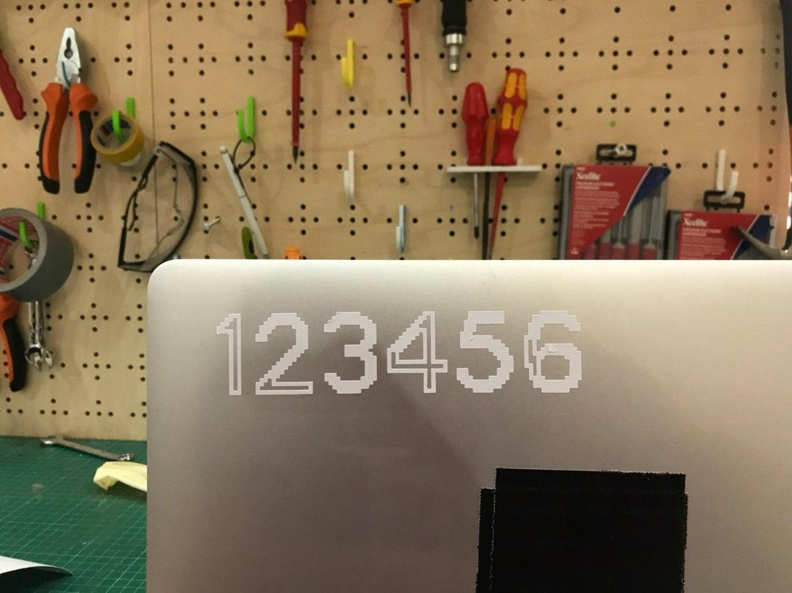
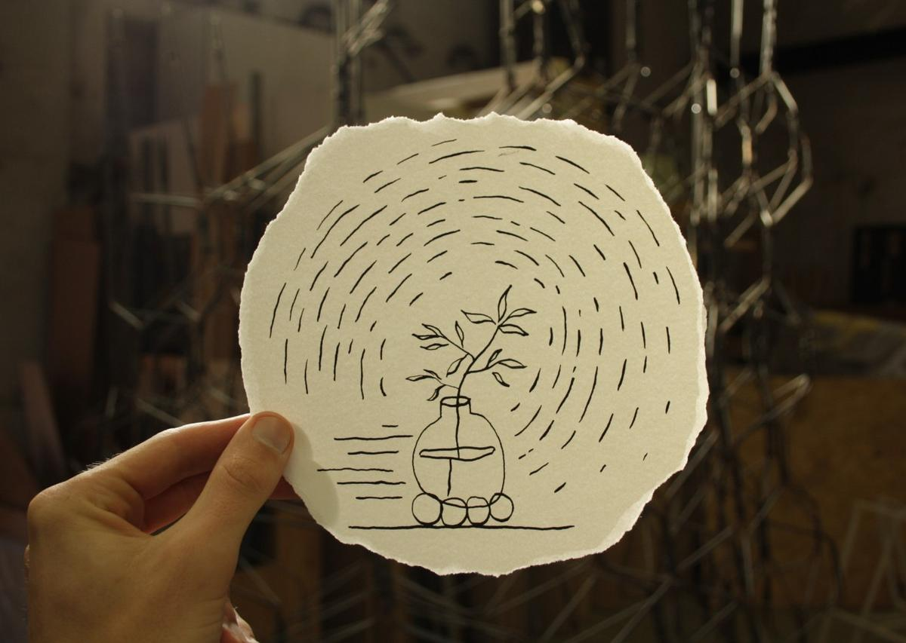

Flux
-

Seen in: Ilford XP2 - 4449 -
Seen in: Ilford XP2 - 4449 -

Seen in: Ilford XP2 - 4449 -

Seen in: Electronics design -
Seen in: Oloid shape -
Seen in: Making an in-circuit programmer -
 Seen in: The most common password ever -
Seen in: Geodesic dome -
 Seen in: Principles and practices